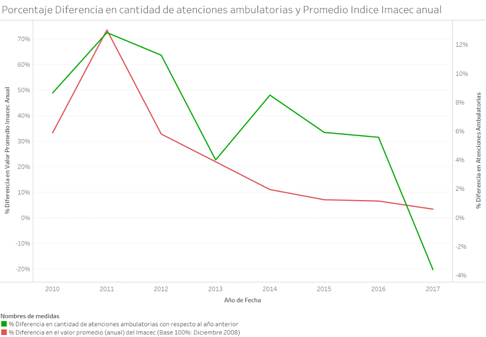

Durante el mes de diciembre, un artículo en el diario “El Mercurio” indicó: "la desaceleración (económica) golpea la actividad hospitalaria y ambulatoria de las clínicas" (*). Considerando esta hipótesis quisimos validar si efectivamente este factor influye
en el volumen de transacciones que se efectuaron a través del sistema de bono electrónico.

Para evaluar una posible correlación entre estas dos variables, graficamos la variación porcentual de atenciones ambulatorias respecto al período anterior, desde el año 2010 hasta 2017 (línea verde), junto a la variación porcentual
del Imacec (promedio anual) para igual período (línea roja), tomando como valor base el valor de diciembre de 2008.
Es así como podemos observar un comportamiento similar en ambas curvas, donde a partir del año 2011 se ve una desaceleración
en el crecimiento de ambos índices denotando una tendencia a la baja. Para profundizar el análisis, se realizó un modelo matemático (regresión lineal), donde los resultados indican que el efecto de la variación del Imacec SI es estadísticamente
significativo.
Para esto tomamos como variable dependiente la cantidad de atenciones ambulatorias realizadas en cada período de un mes, desde el año 2009 hasta 2017, y como variable dependiente la variación del Imacec, junto a
una variable para capturar el efecto del crecimiento de la industria durante este tiempo y 11 variables que capturan el efecto de estacionalidad propio de cada mes.
(*) Puedes leer la nota completa en el siguiente enlace